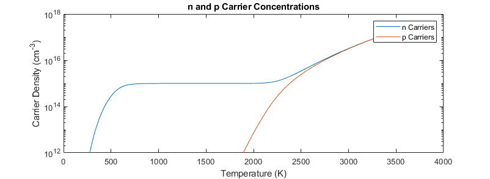

Contents
clear;
Initialize
Nc0 = 2*2.86E19 ; % Coeff. for band edge densities of Si (Diamond same) Nv0 = 3.1E19 ; % Coeff. for band edge densities of Si (Diamond Nc0*2) Nd = 1E15 ; % Number of donors cm^-3 Eg = 5.5 ; % 1.12eV Si Gap; 5.5Ev Diamond Ed = 0.57 ; % Donor level under conduction band (P in Si 0.045eV) % Diamond N is 1.6eV P is 0.57eV kb = 8.617333262145E-5 ; % Boltzman const (ev/K) Tmin = 250; Tmax = 3652; % static temperature resolution of 1k T_Ar = Tmin:Tmax; T_size = size(T_Ar); iterMax = T_size(1,2);
Finish Init
for iter = 1:iterMax
Section Run
T = T_Ar(iter);
%T = 87
Nv = Nv0*(T/300)^(3/2);
Nc = Nc0*(T/300)^(3/2);
% OG Coefficients (break eventually at low T?)
A = (Nd + 2*Nv*exp((Ed-Eg)/(kb*T)))/(Nv*exp(-Eg/(kb*T)));
B = Nc/Nv*exp((Eg/(kb*T)));
C = 2*Nc/Nv*exp((Eg+Ed)/(kb*T));
polyNom = [1, A, -B, -C];
fun = @(x) x^3+A*x^2-B*x-C;
solveRange = [0, 1E100];
y_soln = fzero(fun, solveRange);
% New Coeff
% A0 = Nv*exp(-Eg/(kb*T));
% A = (Nd + 2*Nv*exp((Ed-Eg)/(kb*T)));
% B = Nc;
% C = 2*Nc*exp(Ed/(kb*T));
%
% polyNom = [A0, A, -B, -C];
% y = roots(polyNom);
%
% for index = 1:3
% if (y(index)>0)&&(imag(y(index))==0) %Selects only real/positive roots
% y_soln = y(index);
% end
% end
Emu = kb*T*log(y_soln);
EmuAr(iter) = Emu;
n(iter) = Nc*exp(-Emu/(kb*T));
p(iter) = Nv*exp((Emu-Eg)/(kb*T));
%Error tracker
% error(ei).T = T;
% error(ei).arr = y;
% error(ei).val = y_soln
% ei = ei + 1;
 To run section only
end figure(1) plot(T_Ar,EmuAr) figure(2) semilogy(T_Ar,n); title('n and p Carrier Concentrations'); xlabel('Temperature (K)'); ylabel('Carrier Density (cm^{-3})'); hold on; semilogy(T_Ar,p); ylim([1E12 1E18]); legend('n Carriers', 'p Carriers');